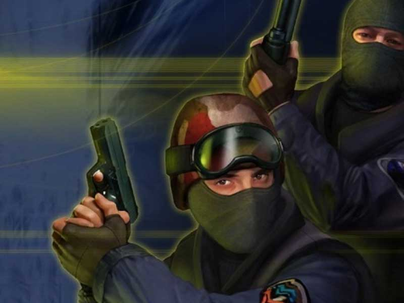
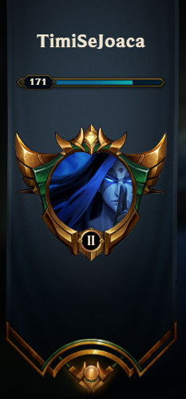
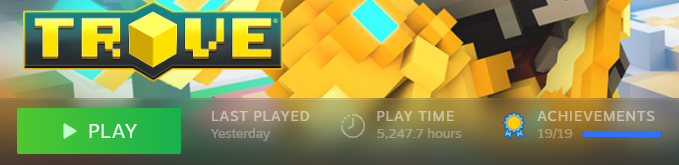
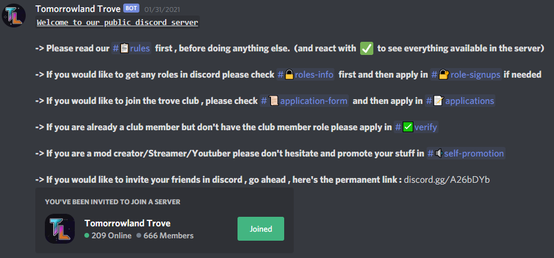

De când eram mic am avut calculator, așa că, inevitabil am început să mă joc destul de mult în timpul liber. Cu toate că îmi plăcea să mă joc cu prietenii afară, cu timpul am început sa îmi petrec timpul liber doar pe calculator.
Am început să mă joc jocuri deja pre-instalate pe calculator, dar cu timpul am descărcat jocuri online
sau mă jucam jocuri online chiar în browser.
Primul joc online foarte popular pe care l-am jucat a fost Counter-Strike 1.6, și cred că acesta a fost
jocul de suflet al multor copii din generația mea.


Dar nu m-am oprit la acesta, am început să mă joc League of Legends, cel mai popular joc de tip MOBA (Multiplayer Online Battle Arena). Am dedicat destul de mult timp acestui joc (peste 3000 de ore la momentul actual) și am ajuns destul de bun, câștigând câteva campionate. Am ajuns intr-o divizie destul de înaltă (Diamond), la momentul actual sunt doar Gold, dar am putut obține aproape toți campionii jocului si pot spune că sunt destul de informat despre fiecare.
Și totuși nu m-am oprit nici la jocul acesta, un prieten m-a invitat intr-un joc numit Trove care
mi-a influențat viața major. Trove este un joc de tip Role-Play (RPG), există mai multe tipuri de
caractere(damage-dealers, healers, tanks, etc) cu care poți juca, dar nu se limitează la unul singur, ci
poți schimba clasa pe care o joci cu un singur buton.
Mi-a plăcut așa de mult încât nu m-am mai jucat nimic altceva, nici măcar League of Legends, care mă
jucam zilnic. Tot timpul liber l-am dedicat acestui joc "micuț" la prima vedere, dar a fost destul de
mare. La momentul actual am mai mult de 5200 de ore in acest joc.

Desigur, petrecând așa de mult timp în acest joc, am și rezultate pe măsură, am ajuns in topul persoanelor din toată lumea, pe locul 9 global si chiar locul 1 pe o anumită categorie, am toate caracterele din joc la nivel maxim și 5 din ele la putere maximă. În plus am reușit să construiesc o comunitate, un club al meu, care este al 2-lea cel mai puternic clan din joc cu peste 600 de membrii. În pozele de mai jos se pot observa o mică parte din realizările mele de-alungul timpului în acest joc.


Având un clan așa de mare, am fost nevoit sa creez un server de discord pentru a avea o comunicare mai
rapidă și eficientă cu toți membrii clubului, așa s-a nascut serverul: "Tomorrowland Trove" care este de
altfel și numele clanului în joc.
Dând click pe logo-ul text al clubului se va activa o invitație către serverul de discord:

Acesta este tabloul informativ al serverului și după cum se poate vedea, la momentul actual pe server sunt 666 de membrii, dar continuăm să creștem in număr cât mai mare. Cu toate că la început serverul a fost creat doar în scopul comunicării cu membrii clanului, acesta a devenit global, având membrii pe discord nu numai din joc, dar și persoane care nu se joacă acest joc, prieteni, artiști etc. Am creat o comunitate diversă, unde se poate discuta pe orice subiect la orice moment. Linkul de invitație este deja mai sus in reprezentarea grafică a numelui, oricine este bine venit, se poate distra, poate socializa și își poate dezvolta abilitățile !
Pe lângă acestea am jucat multe alte jocuri, și "viața mea online" este destul de vastă, dar nu am să prezint totul. Încurajez pe oricine să se integreze într-o comunitate și să socializeze cu persoane din întreaga lume. Făcând acest lucru, m-am putut dezvolta ca persoană și am putut exersa limba engleză în același timp.
În concluzie, jocurile online m-au ajutat foarte mult să-mi dezvolt simțul responsabilității, să-i înțeleg mai bine pe cei din jurul meu, am învățat să stăpânesc limba engleză foarte bine, mi-am dezvoltat abilitățile, reflexele și multe alte calități.